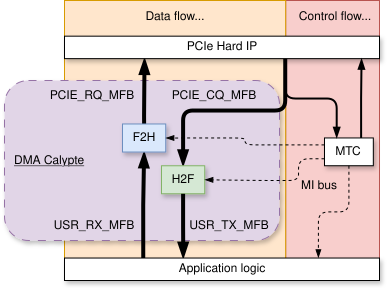
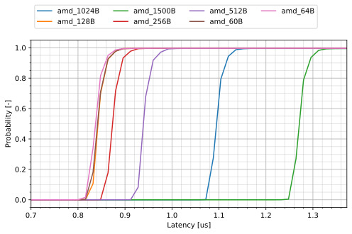
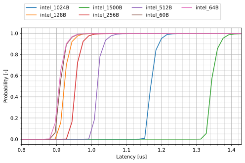
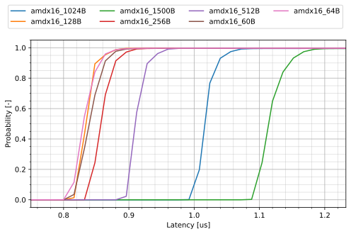
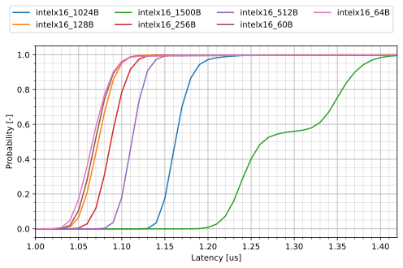
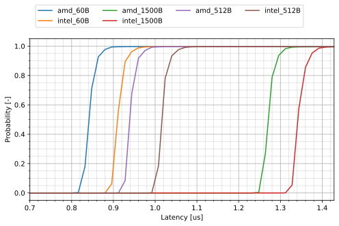

DMA Calypte
This module allows simple DMA access to the host memory over the PCI Express interface for both, Host-to-FPGA (H2F) and FPGA-to-Host (F2H) directions. The design was primarily focused on the lowest latency possible. The module contains two controllers for each direction: the F2H (formerly named RX) and the H2F (formerly named TX) controller. These allow for the full-duplex transmission of packet data from/to the host memory. The controllers connect to the surrounding infrastructure using the MFB bus. The packet transmission is part of the Data Flow which is distinguished from the Control Flow. The Control Flow is established using the MI bus that accesses internal Control and Status (C/S) registers. Each of the controllers contains multiple virtual channels that share the same MFB bus but have separate address spaces in the host memory. This allows for concurrent access from the host system. The block scheme of the DMA module is provided in the following figure:
{kind=link}

The block sheme of the DMA Calypte module and its integration into the NDK framework.
- ENTITY DMA_CALYPTE IS
- Generics
PortsGeneric
Type
Default
Description
=====
Global settings
=====
Settings affecting both RX and TX or the top level entity itself
DEVICE
string
“ULTRASCALE”
Name of target device, the supported are:
“ULTRASCALE”
“STRATIX10”
“AGILEX”
USR_MFB_REGIONS
natural
1
USER MFB interface configuration that is used for user data stream. The alowed configurations are:
(1,4,8,8)
(1,8,8,8)
USR_MFB_REGION_SIZE
natural
8
USR_MFB_BLOCK_SIZE
natural
8
USR_MFB_ITEM_WIDTH
natural
8
HDR_META_WIDTH
natural
24
Width of User Header Metadata information
on RX: added to the DMA header
on TX: extracted from a DMA header
=====
Requester Request (RQ) MFB interface settings. The allowed configurations are:
=====
(1,1,8,32)
(2,1,8,32)
PCIE_RQ_MFB_REGIONS
natural
2
PCIE_RQ_MFB_REGION_SIZE
natural
1
PCIE_RQ_MFB_BLOCK_SIZE
natural
8
PCIE_RQ_MFB_ITEM_WIDTH
natural
32
=====
Completer Request (CQ) MFB interface settings. The allowed configurations are:
=====
(1,1,8,32)
(2,1,8,32)
PCIE_CQ_MFB_REGIONS
natural
2
PCIE_CQ_MFB_REGION_SIZE
natural
1
PCIE_CQ_MFB_BLOCK_SIZE
natural
8
PCIE_CQ_MFB_ITEM_WIDTH
natural
32
=====
RX DMA controller settings
=====
=====
RX_CHANNELS
natural
8
Total number of RX DMA Channels (powers of 2, starting at 2)
RX_PTR_WIDTH
natural
16
Width of Software and Hardware Header/DataPointer.
Affects logic complexity (MI C/S registers especially)
Maximum value: 16
USR_RX_PKT_SIZE_MAX
natural
2**12
Maximum size of a User packet in bytes (in interval between 60 and 2**12, inclusively)
TRBUF_REG_EN
boolean
false
Enables an additional register of the transaction buffer that improves throughput (see Transaction Buffer)
PERF_CNTR_EN
boolean
false
Enables performance counters alowing metrics generation.
=====
TX DMA controller settings
=====
=====
TX_CHANNELS
natural
8
Total number of TX DMA Channels (powers of 2, starting at 2)
TX_PTR_WIDTH
natural
13
Width of the Hardware Descriptor Pointer
Significantly affects the complexity of the controller (the C/S registers as well as buffers to store packets within each channel).
Maximum value: 13 (restricted as a compromise between the size of a controller and maximum intact size of a packet that the software can dispatch)
USR_TX_PKT_SIZE_MAX
natural
2**12
Maximum size of a User packet in bytes (in an interval between 60 and 2**12, inclusively)
=====
Optional settings
=====
Settings for testing and debugging, usually left at default values..
DSP_CNT_WIDTH
natural
64
Width of statistical counters within each channel
RX_GEN_EN
boolean
TRUE
Allows to disable one of the controllers in the DMA module
TX_GEN_EN
boolean
TRUE
ST_SP_DBG_SIGNAL_W
natural
4
Width of the debug signal, do not use unless you know what you are doing
MI_WIDTH
natural
32
Width of MI bus
Port
Type
Mode
Description
CLK
std_logic
in
RESET
std_logic
in
=====
RX DMA User-side MFB
=====
=====
USR_RX_MFB_META_CHAN
std_logic_vector(log2(RX_CHANNELS) -1 downto 0)
in
USR_RX_MFB_META_HDR_META
std_logic_vector(HDR_META_WIDTH -1 downto 0)
in
USR_RX_MFB_DATA
std_logic_vector(USR_MFB_REGIONS*USR_MFB_REGION_SIZE*USR_MFB_BLOCK_SIZE*USR_MFB_ITEM_WIDTH-1 downto 0)
in
USR_RX_MFB_SOF
std_logic_vector(USR_MFB_REGIONS -1 downto 0)
in
USR_RX_MFB_EOF
std_logic_vector(USR_MFB_REGIONS -1 downto 0)
in
USR_RX_MFB_SOF_POS
std_logic_vector(USR_MFB_REGIONS*max(1, log2(USR_MFB_REGION_SIZE)) -1 downto 0)
in
USR_RX_MFB_EOF_POS
std_logic_vector(USR_MFB_REGIONS*max(1, log2(USR_MFB_REGION_SIZE*USR_MFB_BLOCK_SIZE)) -1 downto 0)
in
USR_RX_MFB_SRC_RDY
std_logic
in
USR_RX_MFB_DST_RDY
std_logic
out
=====
TX DMA User-side MFB
=====
=====
USR_TX_MFB_META_PKT_SIZE
std_logic_vector(log2(USR_TX_PKT_SIZE_MAX + 1) -1 downto 0)
out
USR_TX_MFB_META_CHAN
std_logic_vector(log2(TX_CHANNELS) -1 downto 0)
out
USR_TX_MFB_META_HDR_META
std_logic_vector(HDR_META_WIDTH -1 downto 0)
out
USR_TX_MFB_DATA
std_logic_vector(USR_MFB_REGIONS*USR_MFB_REGION_SIZE*USR_MFB_BLOCK_SIZE*USR_MFB_ITEM_WIDTH-1 downto 0)
out
USR_TX_MFB_SOF
std_logic_vector(USR_MFB_REGIONS -1 downto 0)
out
USR_TX_MFB_EOF
std_logic_vector(USR_MFB_REGIONS -1 downto 0)
out
USR_TX_MFB_SOF_POS
std_logic_vector(USR_MFB_REGIONS*max(1, log2(USR_MFB_REGION_SIZE)) -1 downto 0)
out
USR_TX_MFB_EOF_POS
std_logic_vector(USR_MFB_REGIONS*max(1, log2(USR_MFB_REGION_SIZE*USR_MFB_BLOCK_SIZE)) -1 downto 0)
out
USR_TX_MFB_SRC_RDY
std_logic
out
USR_TX_MFB_DST_RDY
std_logic
in
=====
Debug signals
=====
Should not be used by the user of the component
ST_SP_DBG_CHAN
std_logic_vector(log2(TX_CHANNELS) -1 downto 0)
out
ST_SP_DBG_META
std_logic_vector(ST_SP_DBG_SIGNAL_W -1 downto 0)
out
=====
RQ PCIe interface
=====
Upstream MFB interface (for sending data to the PCIe Endpoint)
PCIE_RQ_MFB_DATA
std_logic_vector(PCIE_RQ_MFB_REGIONS*PCIE_RQ_MFB_REGION_SIZE*PCIE_RQ_MFB_BLOCK_SIZE*PCIE_RQ_MFB_ITEM_WIDTH-1 downto 0)
out
PCIE_RQ_MFB_META
std_logic_vector(PCIE_RQ_MFB_REGIONS*PCIE_RQ_META_WIDTH -1 downto 0)
out
PCIE_RQ_MFB_SOF
std_logic_vector(PCIE_RQ_MFB_REGIONS -1 downto 0)
out
PCIE_RQ_MFB_EOF
std_logic_vector(PCIE_RQ_MFB_REGIONS -1 downto 0)
out
PCIE_RQ_MFB_SOF_POS
std_logic_vector(PCIE_RQ_MFB_REGIONS*max(1, log2(PCIE_RQ_MFB_REGION_SIZE)) -1 downto 0)
out
PCIE_RQ_MFB_EOF_POS
std_logic_vector(PCIE_RQ_MFB_REGIONS*max(1, log2(PCIE_RQ_MFB_REGION_SIZE*PCIE_RQ_MFB_BLOCK_SIZE)) -1 downto 0)
out
PCIE_RQ_MFB_SRC_RDY
std_logic
out
PCIE_RQ_MFB_DST_RDY
std_logic
in
=====
CQ PCIe interface
=====
Downstream MFB interface (for receiving data from the PCIe Endpoint)
PCIE_CQ_MFB_DATA
std_logic_vector(PCIE_CQ_MFB_REGIONS*PCIE_CQ_MFB_REGION_SIZE*PCIE_CQ_MFB_BLOCK_SIZE*PCIE_CQ_MFB_ITEM_WIDTH-1 downto 0)
in
PCIE_CQ_MFB_META
std_logic_vector(PCIE_CQ_MFB_REGIONS*PCIE_CQ_META_WIDTH -1 downto 0)
in
PCIE_CQ_MFB_SOF
std_logic_vector(PCIE_CQ_MFB_REGIONS -1 downto 0)
in
PCIE_CQ_MFB_EOF
std_logic_vector(PCIE_CQ_MFB_REGIONS -1 downto 0)
in
PCIE_CQ_MFB_SOF_POS
std_logic_vector(PCIE_CQ_MFB_REGIONS*max(1, log2(PCIE_CQ_MFB_REGION_SIZE)) -1 downto 0)
in
PCIE_CQ_MFB_EOF_POS
std_logic_vector(PCIE_CQ_MFB_REGIONS*max(1, log2(PCIE_CQ_MFB_REGION_SIZE*PCIE_CQ_MFB_BLOCK_SIZE)) -1 downto 0)
in
PCIE_CQ_MFB_SRC_RDY
std_logic
in
PCIE_CQ_MFB_DST_RDY
std_logic
out
=====
MI interface for SW access
=====
=====
MI_ADDR
std_logic_vector (MI_WIDTH -1 downto 0)
in
MI_DWR
std_logic_vector (MI_WIDTH -1 downto 0)
in
MI_BE
std_logic_vector (MI_WIDTH/8-1 downto 0)
in
MI_RD
std_logic
in
MI_WR
std_logic
in
MI_DRD
std_logic_vector (MI_WIDTH -1 downto 0)
out
MI_ARDY
std_logic
out
MI_DRDY
std_logic
out
Supported PCIe Configurations
The design can be configured for two major PCIe IP configurations. This corresponds to setting the input/output MFB bus interfaces when configuring the DMA_CALYPTE entity.
Device: AMD UltraScale+ Architecture, Intel Avalon P-Tile
PCI Express configuration: Gen3 x8
Internal bus width: 256 bits
Frequency: 250 MHz
Input MFB configuration: 1,4,8,8
Output MFB configuration: 1,1,8,32
Device: AMD UltraScale+ architecture, Intel Avalon P-Tile/R-Tile
PCI Express configuration: Gen3 x16 (AMD), Gen4 x16 (Intel), Gen5 x8 (Intel)
Internal bus width: 512 bits
Frequency: 250 MHz (AMD), 400 MHz (Intel)
Input MFB configuration: 1,8,8,8
Output MFB configuration: 2,1,8,32
Resource consumption
The following tables show the resource utilization on the AMD Virtex UltraScale+
chip (xcvu7p-flvb2104-2-i) for Gen3 x8 and Gen3 x16 PCIe configurations.
PCIe Gen3 x8 |
PCIe Gen3 x16 |
|||
|---|---|---|---|---|
16 channels |
64 channels |
16 channels |
64 channels |
|
LUT as Logic |
7650 (0.97%) |
10441 (1.32%) |
16257 (2.06%) |
18571 (2.36%) |
LUT as Memory |
1466 (0.37%) |
2310 (0.59%) |
1592 (0.40%) |
2446 (0.62%) |
Registers |
10156 (0.64%) |
11614 (0.74%) |
16290 (1.03%) |
17929 (1.14%) |
CARRY logic |
141 (0.14%) |
238 (0.24%) |
145 (0.15%) |
243 (0.25%) |
RAMB36 Tiles |
32 (2.22%) |
128 (8.89%) |
0 (0.00%) |
128 (8.89%) |
RAMB18 Tiles |
8 (0.28%) |
8 (0.28%) |
72 (2.50%) |
8 (0.28%) |
URAMs |
8 (1.25%) |
32 (5.00%) |
8 (1.25%) |
32 (5.00%) |
DSPs |
4 (0.09%) |
4 (0.09%) |
4 (0.09%) |
4 (0.09%) |
Latency report
Note
Unless given explicitly, all measured values are in microseconds.
Since this module has been designed for low latency, this is our primary concern. Even though its RTL design reaches the minimum latency, the PCI Express protocol remains the biggest contributor to the overall latency. From our observations, the latency is also influenced by the vendor of the CPU where Intel devices perform slightly better than AMD devices. Some PCIe IPs for FPGAs provide a special low-latency mode such as the PCIE4 block used in AMD UltraScale+ architecture, which is enabled on all AMD cards whose measurements we provide. The latency is always measured as a Round-Trip-Time (RTT) latency either on the path: Host -> H2F Controller -> FPGA -> F2H Controller -> Host (HFH), or FPGA -> F2H Controller -> Host -> H2F Controller -> FPGA (FHF), which will be denoted for specific results. Every time the data are looped back, either in the Host for the FHF path or in the FPGA for the HFH path, the loopback is established with the shortest path possible (E.g., for the HFH to directly connect USR_TX_MFB to the USR_RX_MFB interface).
AMD FPGA Gen3x8
Card: Silicom fb2CGhh (Chip:
xcku15p-ffve1760-2-e)CPU: Intel Xeon CPU E5-2630 v4 @ 2.20GHz
RAM: 32 GB
PCIe configuration: Gen3x8 (low latency configuration)
FHF latency (16384 repetitions)
The following table summarizes the measured results. The form of a distribution function has been chosen as the most suitable since the measured latency values have a normal distribution across the set. The quantiles are labeled with a letter “P” followed by its value, meaning P1 the 0.01-quantile, P50 the 0.5-quantile (or median), etc.
Packet size
Min
P1-lat
P50-lat
P80-lat
P99-lat
Max
60B
0.796
0.825
0.842
0.855
0.892
24.676
64B
0.796
0.820
0.837
0.847
0.887
17.284
128B
0.804
0.831
0.843
0.855
0.892
18.768
256B
0.832
0.857
0.874
0.886
0.924
19.168
512B
0.900
0.928
0.939
0.952
0.990
18.440
1024B
1.052
1.078
1.095
1.105
1.143
19.640
1500B
1.228
1.254
1.271
1.281
1.324
18.236

HFH latency (64 B packets, 1000000 repetitions)
822 ns (median), 1241 ns (0.99-quantile)
HFH latency (1500 B packets, 1000000 repetitions)
1340 ns (median), 1401 ns (0.99-quantile)
{kind=link}
Intel FPGA Gen3x8
Note
This 8-lane PCIe configuration is not officially provided by the NDK framework. It has been published here to only provide a comparison with the equally configured AMD-based FPGA card.
Card: Silicom FPGA SmartNIC N6010 (Chip:
AGFB014R24A2E2V)CPU: Intel Xeon CPU E5-2630 v4 @ 2.20GHz
RAM: 32 GB
PCIe configuration: Gen3x8
FHF latency (16384 repetitions)
Pakcet size
Min
P1-lat
P50-lat
P80-lat
P99-lat
Max
60B
0.876
0.897
0.910
0.923
0.965
17.836
64B
0.872
0.890
0.907
0.921
0.959
20.972
128B
0.888
0.906
0.922
0.935
0.973
17.908
256B
0.920
0.938
0.954
0.966
1.006
18.028
512B
0.980
1.001
1.016
1.026
1.070
19.660
1024B
1.128
1.155
1.169
1.182
1.219
18.452
1500B
1.300
1.329
1.342
1.357
1.401
18.236

{kind=link}
AMD FPGA Gen3x16
Card: Silicom fb2CGhh (Chip:
xcku15p-ffve1760-2-e)CPU: Intel Xeon CPU E5-2630 v4 @ 2.20GHz
RAM: 32 GB
PCIe configuration: Gen3x16
FHF latency (16384 repetitions)
Packet size
Min
P1-lat
P50-lat
P80-lat
P99-lat
Max
60B
0.800
0.819
0.839
0.856
0.894
17.828
64B
0.792
0.814
0.830
0.846
0.886
17.752
128B
0.804
0.819
0.834
0.845
0.885
18.444
256B
0.828
0.839
0.857
0.872
0.910
18.856
512B
0.880
0.898
0.910
0.923
0.959
17.832
1024B
0.984
1.000
1.016
1.027
1.070
18.020
1500B
1.076
1.094
1.114
1.133
1.184
20.216

{kind=link}
Intel FPGA Gen4x16
Card: Silicom FPGA SmartNIC N6010 (Chip:
AGFB014R24A2E2V)CPU: Intel Xeon Gold 6342 CPU @ 2.80GHz
RAM: 128 GB
PCIe configuration: Gen4x16
FHF latency (16384 repetitions)
Packet size
Min
P1-lat
P50-lat
P80-lat
P99-lat
Max
60B
0.965
1.049
1.069
1.084
1.116
4.240
64B
0.968
1.044
1.066
1.082
1.118
3.822
128B
0.968
1.052
1.073
1.087
1.112
3.645
256B
1.030
1.068
1.087
1.101
1.128
3.420
512B
1.052
1.094
1.112
1.124
1.148
3.717
1024B
1.115
1.145
1.162
1.176
1.224
3.675
1500B
1.177
1.223
1.264
1.356
1.408
4.765

HFH latency (64 B packets, 1000000 repetitions)
866 ns (median), 1340 ns (0.99-quantile)
HFH latency (1500 B packets, 1000000 repetitions)
1292 ns (median), 2241 ns (0.99-quantile)
{kind=link}
Comparison of FPGA vendors
Cards: Silicom FPGA SmartNIC N6010 and Silicom fb2CGhh
CPU: Intel Xeon CPU E5-2630 v4 @ 2.20GHz
RAM: 32 GB
PCIe configuration: Gen3x8
FHF latency (16384 repetitions)
The graph beneath the table picks only some of the packet lengths showed in the table.
Packet size
Min
P1-lat
P50-lat
P80-lat
P99-lat
Max
amd_60B
0.796
0.825
0.842
0.855
0.892
24.676
intel_60B
0.876
0.897
0.910
0.923
0.965
17.836
amd_64B
0.796
0.820
0.837
0.847
0.887
17.284
intel_64B
0.872
0.890
0.907
0.921
0.959
20.972
amd_128B
0.804
0.831
0.843
0.855
0.892
18.768
intel_128B
0.888
0.906
0.922
0.935
0.973
17.908
amd_256B
0.832
0.857
0.874
0.886
0.924
19.168
intel_256B
0.920
0.938
0.954
0.966
1.006
18.028
amd_512B
0.900
0.928
0.939
0.952
0.990
18.440
intel_512B
0.980
1.001
1.016
1.026
1.070
19.660
amd_1024B
1.052
1.078
1.095
1.105
1.143
19.640
intel_1024B
1.128
1.155
1.169
1.182
1.219
18.452
amd_1500B
1.228
1.254
1.271
1.281
1.324
18.236
intel_1500B
1.300
1.329
1.342
1.357
1.401
18.236

{kind=link}
Local Subcomponents
Maintainers
Vladislav Valek <valekv@cesnet.cz>